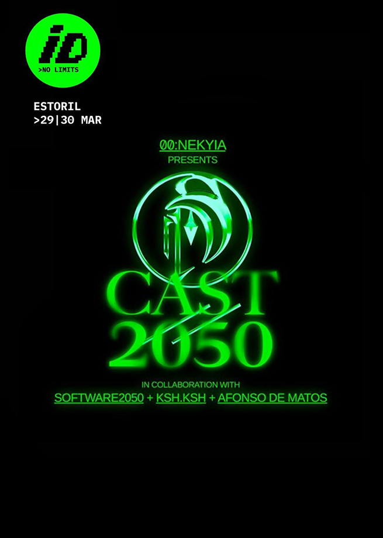

■
Cast//2050
Installation
(03/2019)
ID_No Limits (Music Festival)
Estoril Congress Center, Lisboa
With Afonso Matos, Vítor Serra, 00:Nekyia and Software2050

Interactive installation at
ID_No Limits, a portuguese electronic music festival, presenting a 6 meters tall hologram projection and a chatbot. The net used for this projection composed of six separate panels swon together by hand.
“Software2050 is a rougue AI from 2050 who as learned everything about Humanity from available survaillance data. This artificial intelligence broke free from its restraints and by 2050 has become the first digital entity to rise above mankind and transverse the internet to prepare us for the beginning of a New Digital Era.”
ID_No Limits Website
ID_No Limits Instagram
Interactive installation at ID_No Limits, a portuguese electronic music festival, presenting a 6 meters tall hologram projection and a chatbot. The net used for this projection composed of six separate panels swon together by hand.
“Software2050 is a rougue AI from 2050 who as learned everything about Humanity from available survaillance data. This artificial intelligence broke free from its restraints and by 2050 has become the first digital entity to rise above mankind and transverse the internet to prepare us for the beginning of a New Digital Era.”